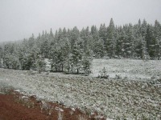
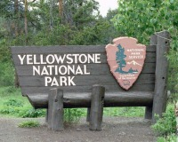
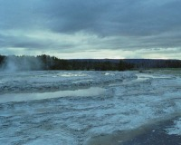
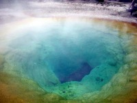
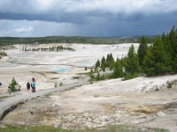
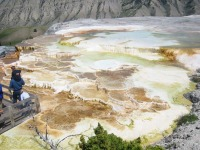
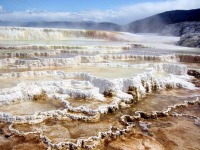
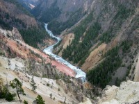
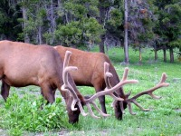
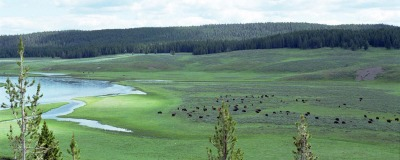

 |
Codyより入園。途中雪が降ってきたのには驚いた。チャリダーがいたのにはもっとびっくりした。Codyからもよりのビジターセンター Fishing Bridgeまでは80マイル。無事を祈るのみ。 |
|
やっと到着。ほっとしたひと時。 |
 |
| Old Faithfulガイザー。 何度来ても外せません。 | |
| 夕刻のイエローストーンはGreat Fountain
Geyserが一番好き。人気もなく、幻想的な世界が広がります。 |
 |
 |
Morning Glory
Pool Old Faithful AreaのUpper Geyser Basinにあります。 |
| Norris Geyser
Basin 硫黄に覆われた不気味な大地が広がっています。 |
 |
 |
Mammoth Hot Springs Main
Terrace 偉い規模の大きな、鍾乳洞みたいなもの。こんなに近づいて危険は無いのか？と疑いたくなります。 |
| 綺麗に段々になっています。 |  |
 |
Inspiration PointからみたCanyon Area。北米のいろいろな景色がここ一箇所で楽しめます。 |
| 道端には野良鹿の群れなんかも観れます。角が産毛に覆われていて触ってみたい。 |  |
|
 | |
イエローストーンは最果ての地にある感がありますが、とても良いです。お勧めです。豊かな大自然を感じることができます。
いつ行っても混んでいます。ロッジから近くの街(West Yellowstone)
まで1時間はかかりますから、予約した方が良いです。（今ではネットでできることでですし)
West
Yellowstoneへ行けばモーテルが一杯あります。中には比較的安いところもあるので、熱心に探しましょう。ちなみにこのとき泊ったころは$65+taxと記憶しています。部屋はファミリー向けが多く、長期滞在に対応していますんで、ベッドはキングサイズ4つ、冷蔵庫付きがざらです。YHもあります。
Codyの方が、宿泊は高い印象です。(街としてはおおきい)
短期の滞在でも、中2日はパパッと観るだけでも欲しいところです。乗馬、トレッキングは際限なく可能ですのでいくらいても飽きないと思われます。
Written : 2004.03.30